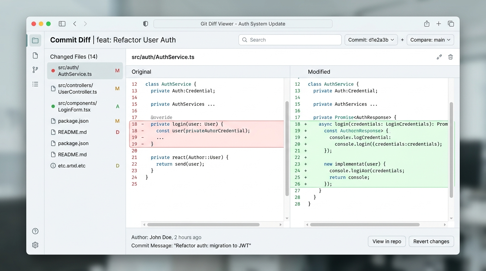

A clean, secure, and privacy-focused git diff viewer that processes everything client-side. Upload a diff file or paste raw diff text to explore changes with a structured, beautiful interface. No server, no tracking, no data ever leaves your browser.

Features
DiffLense gives you a full-featured diff viewing experience without compromising your privacy or requiring any setup.
All processing happens locally in your browser. No data is ever sent to any server. Your code stays yours.
No server round trips required. Everything runs instantly in the browser for a seamless experience.
Switch between side-by-side and unified diff views to match your preferred way of reviewing code changes.
Quick navigation for diffs with multiple files. Stays fixed when scrolling for easy access to any changed file.
Clean code highlighting with line numbers makes diffs easy to read and understand at a glance.
Upload diff files directly or paste content into the editor. Supports any standard git diff format.
Expand or collapse individual files or all at once. Focus on the changes that matter most to you.
Settings to control how diffs are displayed. Smart file stats show additions and deletions per file.
Free and open source forever under GPL-3.0. Inspect the code, contribute, or self-host your own instance.
How to Use
Run git diff in your repository
Copy the diff output or upload a .diff file
Select unified or side-by-side view to match your preference
Use the sidebar to quickly jump to specific files in the diff
Review code changes with syntax highlighting and smart stats
Technology
DiffLense is a static website - no build tools, no frameworks, no dependencies. Pure web standards for maximum speed and reliability.
Semantic markup for accessible, structured content
Responsive design with modern layout and animations
Zero dependencies, full client-side processing
GitHub Pages with custom domain support
Free and open source, forever
Zero server requirements, zero data collection
Local Development
Clone, serve, and start reviewing diffs in under a minute.
No installation needed. Open DiffLense in your browser and paste a diff to get started.